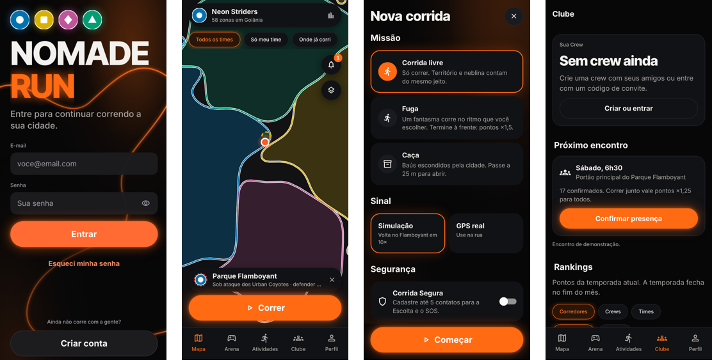

Abstract. This paper presents NOMADE RUN, a mobile running application that combines activity tracking (GPS recording, distance, pace and history) with a territory game played on the real city map: every valid meter run inside a hexagonal zone earns points for the runner's team, and the team with the most influence controls the zone. The system was specified with 27 functional requirements, 15 non-functional requirements and 19 business rules, and implemented with React Native/Expo and Supabase. The server is authoritative: the same rules module computes a provisional result on the phone and the official score on the server. More than 900 automated checks verified the minimum viable product.
Resumo. Este artigo apresenta o NOMADE RUN, um aplicativo móvel de corrida de rua que une o registro esportivo (gravação por GPS, distância, ritmo e histórico) a um jogo de disputa de território sobre o mapa real da cidade: cada metro válido corrido dentro de uma zona hexagonal gera pontos para a equipe do corredor, e a equipe com mais influência domina a zona. O sistema foi especificado com 27 requisitos funcionais, 15 não funcionais e 19 regras de negócio, e implementado com React Native/Expo e Supabase. O servidor é a fonte oficial das pontuações: o mesmo módulo de regras calcula um resultado provisório no celular e o oficial no servidor. Mais de 900 checagens automatizadas verificaram o produto mínimo viável.
Palavras-chave: Gamificação; Corrida de Rua; Jogos Baseados em Localização; Aplicativos Móveis; Engenharia de Software.
A inatividade física é um dos principais fatores de risco para doenças crônicas. A Organização Mundial da Saúde recomenda ao menos 150 minutos semanais de atividade aeróbica moderada para adultos [WHO 2020], mas 27,5% da população adulta mundial não atinge o nível recomendado, proporção que praticamente não mudou entre 2001 e 2016 [Guthold et al. 2018]. A corrida de rua é uma das formas mais acessíveis de atingir essa meta, porém manter a regularidade é difícil, e muitos iniciantes abandonam o hábito nas primeiras semanas.
Os aplicativos de monitoramento, como o Strava e o Nike Run Club, resolvem bem o registro esportivo, mas oferecem poucos motivos para voltar a correr além das métricas pessoais e dos rankings. Os jogos baseados em localização, por outro lado, mostraram que uma camada de jogo sobre o mundo real pode aumentar a atividade física: um estudo com mais de 30 mil usuários do Pokémon GO registrou aumento médio de mais de 25% nos passos diários nas semanas seguintes à instalação [Althoff et al. 2016].
O NOMADE RUN parte dessa combinação. O aplicativo registra a corrida como um aplicativo esportivo comum e acrescenta uma Arena de modos de jogo sobre o mapa real da cidade. O modo principal, Domínio, divide o mapa em zonas hexagonais: correr dentro de uma zona gera pontos para a equipe (facção) do corredor, e a facção com mais influência passa a dominá-la. Zonas podem ser atacadas, defendidas e fortificadas, e a influência decai com o tempo, o que obriga as equipes a voltar às ruas.
O objetivo deste trabalho é especificar, projetar, implementar e verificar um Produto Mínimo Viável (MVP) desse sistema, funcional de ponta a ponta. As principais contribuições são: um modelo de pontuação por esforço relativo, que equilibra iniciantes e atletas; uma arquitetura em que o servidor é a fonte oficial das pontuações e reaproveita o mesmo módulo de regras do aplicativo; mecanismos de gravação sem internet, assinatura de dados e antifraude adequados a um jogo competitivo; e uma estratégia de verificação que rastreia cada requisito até testes automatizados. O restante do artigo está organizado da seguinte forma: a Seção 2 apresenta a fundamentação teórica e os trabalhos relacionados, a Seção 3 descreve a metodologia, a Seção 4 detalha a arquitetura e a implementação, a Seção 5 traz os resultados da verificação, a Seção 6 discute as limitações e a Seção 7 conclui o trabalho.
Gamificação é o uso de elementos de design de jogos em contextos que não são jogos [Deterding et al. 2011]. A teoria da autodeterminação explica por que esses elementos podem motivar: as pessoas se engajam de forma duradoura quando a atividade satisfaz as necessidades psicológicas de competência, autonomia e vínculo social [Ryan e Deci 2000]. Em um experimento controlado, Sailer et al. [2017] mostraram que cada elemento atua sobre uma necessidade diferente: emblemas, rankings e gráficos de desempenho aumentam a sensação de competência, enquanto colegas de equipe e uma narrativa com significado aumentam o vínculo social.
As revisões da literatura indicam que a gamificação tende a produzir efeitos positivos, mas dependentes do contexto e do perfil dos usuários [Hamari et al. 2014], e que saúde e exercício estão entre os domínios mais estudados [Koivisto e Hamari 2019]. Na área de saúde e bem-estar, uma revisão sistemática encontrou efeitos positivos em 59% dos estudos e mistos em 41%, mais claros nos comportamentos de saúde do que nos resultados cognitivos [Johnson et al. 2016]. Há também críticas: uma análise de 132 aplicativos de atividade física e dieta concluiu que a gamificação é muito usada, mas raramente apoiada em teorias de mudança de comportamento [Lister et al. 2014]. Por isso, o NOMADE RUN não se apoia apenas em pontos e medalhas: a pontuação por esforço relativo busca a competência de qualquer corredor, a escolha de missões e de facção dá autonomia, e as facções, as crews e as metas coletivas (defender uma zona atacada) criam vínculo social.
Os jogos baseados em localização usam a posição real do jogador como parte da mecânica. O Pokémon GO popularizou o gênero e aumentou a atividade física dos jogadores [Althoff et al. 2016], mas o efeito foi passageiro: em um estudo com adultos jovens, o ganho de 955 passos diários na primeira semana diminuiu gradualmente e deixou de ser observado após seis semanas [Howe et al. 2016]. Esse resultado orientou duas decisões de projeto do NOMADE RUN: o progresso fica materializado no espaço (o território da equipe no mapa) e há ciclos de reinício (temporadas mensais e decaimento diário da influência), que renovam os objetivos e mantêm a disputa aberta para novos jogadores.
Jogos de território para corredores, como Turf, Run An Empire e INTVL, mostram que a conquista de áreas é um incentivo para explorar a cidade. Em comum, esses produtos enfrentam dois problemas que este projeto procurou tratar: a justiça da pontuação, pois corredores rápidos ou que treinam muito tendem a dominar tudo, e a fraude por bicicleta, carro ou localização simulada.
Grades globais discretas dividem a superfície da Terra em células regulares e hierárquicas, e as hexagonais têm a vantagem da vizinhança uniforme: todos os vizinhos de uma célula estão à mesma distância do centro [Sahr et al. 2003]. Foi adotado o H3, índice geoespacial hexagonal hierárquico e aberto [Brodsky 2018], que torna a disputa entre zonas adjacentes mais justa do que em grades quadradas, permite agrupar zonas em distritos e funciona em qualquer cidade.
A posição obtida por smartphones tem erro: em testes de campo, o GPS assistido apresentou erro mediano de cerca de 8 m, contra 74 m do posicionamento por Wi-Fi e 600 m do celular [Zandbergen 2009]. Por isso, pontos com baixa precisão precisam ser descartados antes de pontuar. Além do erro, a localização pode ser falsificada de propósito, prática conhecida e documentada em serviços baseados em localização [Zhao e Sui 2017]. O NOMADE RUN combina limites de velocidade, coerência entre pontos consecutivos e sensores do aparelho em regras explícitas e testáveis, descritas na Seção 4.3, sempre recalculadas no servidor, e protege os dados em trânsito com o código de autenticação HMAC [Krawczyk et al. 1997].
A Tabela 1 compara o NOMADE RUN com produtos que inspiraram o projeto, segundo as funções declaradas por cada um.
| Produto | Registro Esportivo | Território no Mapa | Equipes | Pontuação por Esforço Relativo | Antifraude Explícita |
|---|---|---|---|---|---|
| Strava | Sim | Não (segmentos) | Clubes | Não | Sim |
| Pokémon GO | Não | Pontos fixos | Sim | Não | Sim |
| Turf / Run An Empire | Parcial | Sim | Parcial | Não | Parcial |
| INTVL | Sim | Sim (área fechada) | Clubes | Não | Parcial |
| NOMADE RUN | Sim | Sim (hexágonos H3) | 4 facções e crews | Sim | Sim (servidor) |
O trabalho seguiu as etapas clássicas da engenharia de software [Sommerville 2019, Pressman e Maxim 2021]: concepção, especificação de requisitos, projeto, implementação incremental e verificação. A especificação resultou em uma Especificação de Requisitos de Software (ERS) com 27 requisitos funcionais (RF), 15 requisitos não funcionais (RNF), 19 regras de negócio (RN) e três casos de uso detalhados. Cada requisito recebeu um identificador único e, sempre que possível, um critério de aceite mensurável, para permitir a rastreabilidade até os testes.
Os requisitos foram priorizados em três níveis: P0, sem os quais não há demonstração; P1, importantes; e P2, desejáveis. O desenvolvimento foi organizado em fases incrementais: análise e base documental; infraestrutura de banco, autenticação e camada de acesso; corrida de ponta a ponta com GPS; funcionalidades de jogo e sociais; qualidade e segurança; e entrega, com adequação da interface ao uso móvel. Ao fim de cada fase, as verificações automatizadas precisavam passar, e um registro de progresso documentava o que foi feito, os testes executados e as pendências. As decisões técnicas foram registradas com contexto, justificativa e consequências.
A implementação contou com apoio de ferramentas de inteligência artificial generativa para programação, organizadas em papéis (arquitetura, backend, frontend, integrações, qualidade e documentação), sob coordenação e revisão dos autores. Todo código gerado passou pelas mesmas verificações automatizadas.
O sistema tem três componentes, mostrados na Figura 1: o aplicativo móvel, o servidor em nuvem e o painel de moderação. O aplicativo foi desenvolvido em React Native com Expo e TypeScript [Expo 2026]. O servidor usa o Supabase [Supabase 2026]: PostgreSQL com a extensão PostGIS para dados geográficos, autenticação com tokens JWT, segurança por linha (RLS), Edge Functions em TypeScript, atualização em tempo real e tarefas agendadas. O painel de moderação é o próprio aplicativo executado no navegador, em uma rota restrita a moderadores e administradores.
O código do aplicativo foi organizado em camadas com dependências em um só sentido: o módulo de regras (domínio) é puro, sem dependência de interface, banco ou rede; os serviços cuidam de GPS, armazenamento, sincronização e assinatura; e as telas consomem os serviços por meio de repositórios. Essa separação permitiu testar as regras de forma isolada e reaproveitar exatamente o mesmo código nas Edge Functions do servidor.
Para cada zona percorrida em uma corrida válida, os pontos (Run Points, RP) seguem a regra de negócio RN-001:
RP = metros válidos × 0,1 × Mesforço × Msequência × Mfantasma × Mgrupo × Mdefesa
O multiplicador de esforço é a razão entre o ritmo habitual do próprio corredor (mediana das últimas dez corridas) e o ritmo da corrida, limitado entre 0,8 e 1,3. Assim, correr no próprio limite vale o mesmo para um iniciante e para um atleta. Os demais multiplicadores recompensam a regularidade semanal, vencer o "fantasma" na missão Fuga, correr com membros da mesma crew e defender uma zona da própria facção que está sob ataque. Há um teto de 300 RP por usuário, por zona e por dia.
A influência de cada facção em uma zona é a soma dos RP. Uma zona neutra é conquistada ao atingir 30 de influência, cerca de 300 metros corridos, para que a primeira corrida de um iniciante já conquiste algo. Uma zona com dono só muda de mãos quando a desafiante atinge 110% da influência do dono, o que evita trocas constantes. Quando uma rival atinge 50% da influência do dono, a zona fica sob ataque: abre-se uma janela de defesa de 24 horas e os membros da facção que correram ali recentemente recebem um alerta. Todos os dias a influência decai 10%, o que mantém o mapa vivo e impede o domínio permanente.
Em um jogo competitivo, nenhum ponto calculado no aparelho pode ser aceito sem verificação. O fluxo de uma corrida tem quatro passos. Primeiro, o aplicativo grava cada ponto de GPS, com precisão, velocidade e contagem de passos, em uma fila local. Segundo, a cada poucos segundos, e sempre que a conexão volta, os pontos são enviados em lotes assinados com HMAC-SHA256, com uma chave exclusiva de cada aparelho. Terceiro, o servidor confere a assinatura, a ordem e a duplicidade de cada lote, de modo que o reenvio após uma queda de conexão não perde nem duplica pontos. Quarto, ao finalizar, o servidor aplica o antifraude e as regras de pontuação e de território em uma transação e devolve o resultado oficial. Sem internet, o aplicativo calcula um resumo provisório com o mesmo módulo de regras e o confirma automaticamente depois.
O antifraude aplica, em ordem: descarte de pontos com precisão pior que 30 m; invalidação de trechos com velocidade acima de 40 km/h, com média acima de 25 km/h por mais de 30 s ou com saltos de posição maiores que 50 m em até 1 s; verificação da cadência de passos entre 8 e 20 km/h; e rejeição da corrida inteira quando o sistema operacional sinaliza localização simulada. Cada indício reduz o Índice de Confiança do usuário; abaixo de 40, as corridas vão para a fila de moderação e só pontuam após aprovação com justificativa.
As senhas são armazenadas com bcrypt, os tokens expiram em uma hora e todas as tabelas têm políticas de segurança por linha: cada usuário lê apenas os próprios dados privados, e a escrita em zonas e no resultado das corridas é exclusiva do servidor. Para atender à Lei Geral de Proteção de Dados [Brasil 2018], o cadastro exige idade mínima de 16 anos e aceite separado dos termos e da política de privacidade, e o usuário pode exportar os próprios dados e excluir a conta pelo aplicativo. As zonas de privacidade escondem de terceiros os trechos do percurso próximos a endereços marcados.
A interface, ilustrada na Figura 2, desenha o território como regiões suavizadas, sem mostrar a grade de hexágonos. Cada facção tem, além da cor, uma forma própria, para que pessoas com daltonismo diferenciem as equipes [Okabe e Ito 2008]. Elementos interativos têm área de toque mínima de 44 pt, descrição para leitores de tela e contraste de texto de pelo menos 4,5:1 [W3C 2018]. A Corrida Segura permite cadastrar até cinco contatos, oferece um botão SOS e pergunta se está tudo bem quando o corredor fica parado por mais de dez minutos.

A verificação combinou testes automatizados em vários níveis, executados a cada fase. Os testes do módulo de regras incluem testes baseados em propriedades [Claessen e Hughes 2000], que geram centenas de entradas aleatórias e verificam invariantes: os pontos nunca são negativos nem ultrapassam o teto diário, a conquista respeita a margem de 110%, o decaimento nunca aumenta a influência e nenhum trecho válido passa de 40 km/h.
A Tabela 2 apresenta os resultados. Cada caso de teste é uma verificação automática com resultado esperado definido antes da execução; "aprovado" significa que o sistema produziu exatamente esse resultado. Nas linhas no formato X/Y, X é o número de casos aprovados e Y o número de casos executados; portanto, X igual a Y indica que nenhum caso falhou. Na auditoria de segurança, um caso aprovado é uma tentativa de ataque que o servidor recusou corretamente. A cobertura é o percentual do código do módulo de regras exercitado pelos testes.
| Suíte | O Que Verifica | Resultado | Significado do Resultado |
|---|---|---|---|
| Unitários e de Propriedade | Regras, serviços, sincronização e telas do aplicativo | 410 aprovados | 410 casos executados e nenhuma falha |
| Cobertura do Módulo de Regras | Linhas e ramos de decisão exercitados pelos testes | 100% e 99,5% | Acima da meta de 90% definida no requisito RNF-008 |
| Integração entre Aplicativo e Servidor | Cadastro, corrida, zonas e moderação contra o servidor real | 26/26 | Os 26 cenários funcionaram com aplicativo e servidor juntos |
| Banco de Dados | Políticas de acesso por linha, gatilhos e funções SQL | 285/285 | As 285 asserções sobre permissões e regras do banco foram atendidas |
| Funções do Servidor | Assinatura HMAC, validações e pontuação oficial | 58 aprovados | 58 casos executados e nenhuma falha |
| Ponta a Ponta do Servidor | Fluxos completos pela API, do cadastro ao resultado | 56/56 | As 56 etapas dos fluxos responderam como especificado |
| Auditoria de Segurança | Ataques simulados às funções e às políticas de acesso | 89/89 | As 89 tentativas de ataque foram bloqueadas |
| Navegador | Demonstração completa e comparação de telas com imagens de referência | 14/14 e 4/4 | As 14 etapas do roteiro foram concluídas e as 4 telas ficaram iguais à referência |
A auditoria de qualidade e segurança não encontrou falhas de severidade alta, e os quatro achados de severidade média foram corrigidos com testes que falhavam antes e passaram depois. Também foram medidos indicadores de desempenho no ambiente local: a consulta de zonas visíveis respondeu em até 35 ms em 95% das requisições com 2.000 zonas, para uma meta de 150 ms, e uma troca de dono chegou ao mapa de outro usuário entre 0,2 s e 1,0 s, para uma meta de 3 s. A Tabela 3 resume a situação dos requisitos da ERS.
| Tipo | Implementado | Parcial | Não Implementado | Fora do MVP |
|---|---|---|---|---|
| Requisitos Funcionais (27) | 13 | 12 | 2 | 0 |
| Requisitos Não Funcionais (15) | 5 | 7 | 1 | 2 |
| Regras de Negócio (19) | 13 | 4 | 2 | 0 |
| Total (61) | 31 | 23 | 5 | 2 |
Dos 25 requisitos de prioridade P0, 16 foram implementados por completo e 9 de forma parcial; os parciais funcionam no essencial, com pendências documentadas. Os cinco não implementados são de prioridade P1 ou P2: mapa de calor, feed social, título de Prefeito, Raid com dados reais e uma meta de desempenho que depende de medição em aparelho.
A decisão mais importante do projeto foi tornar o servidor a fonte oficial das pontuações e reaproveitar nele o mesmo módulo de regras do aplicativo. Isso eliminou a duplicação de lógica, garantiu que o resumo provisório coincida com o oficial e concentrou nos testes do domínio a maior parte da complexidade do jogo. A pontuação por esforço relativo e o limiar baixo de conquista de zonas neutras dão ganhos visíveis já na primeira corrida, o que atende à necessidade de competência discutida na Seção 2.1.
O trabalho tem limitações. A primeira é que funcionalidades secundárias previstas na ERS ficaram parciais ou de fora do MVP. O mapa de calor e o feed social receberam prioridade P2 e foram adiados para que os requisitos essenciais fossem concluídos e verificados; no lugar do mapa de calor, o aplicativo mostra apenas a camada pessoal de ruas já percorridas. O feed, restrito à crew do corredor, e a Raid foram desenvolvidos em uma iteração posterior ao MVP, ainda não publicada no servidor em nuvem, e o mapa de calor permanece como trabalho futuro.
A segunda limitação é a dependência de uma versão própria do aplicativo para alguns recursos nativos. O MVP foi distribuído pelo Expo Go, aplicativo genérico que executa projetos Expo sem compilação, mas que não oferece todas as interfaces nativas: nele, a gravação por GPS com a tela bloqueada não funciona no iOS e as notificações push remotas não estão disponíveis no Android. Como contorno, o aplicativo mantém a tela acesa durante a corrida e entrega os alertas por notificações locais e por uma central de notificações interna, o que exige o aplicativo aberto. A solução é gerar uma versão compilada do aplicativo, com as permissões de localização em segundo plano e as credenciais de push, etapa já preparada na configuração do projeto, mas ainda não validada em aparelhos.
Há ainda limitações de verificação e de segurança. Não foram executados o teste de carga com 5.000 corredores simultâneos nem a medição de consumo de bateria, e os roteiros de teste em aparelho foram escritos, mas não executados em dispositivos físicos. A assinatura HMAC dificulta a adulteração dos dados em trânsito, mas não prova que o cliente é o aplicativo oficial; para isso seria necessária a atestação do aparelho. Por fim, o efeito do jogo sobre a regularidade de treino não foi medido com usuários reais.
Este artigo apresentou o NOMADE RUN, um aplicativo que transforma a corrida de rua em uma disputa de território entre equipes sobre o mapa real da cidade. O MVP funciona de ponta a ponta: cadastro, escolha de facção, corrida com GPS, gravação sem internet, sincronização assinada, validação antifraude, pontuação e conquista no servidor, atualização do mapa em tempo real, alertas de invasão, rankings, crews, Corrida Segura e moderação. A verificação automatizada em vários níveis, rastreada até os requisitos, deu segurança para evoluir o sistema ao longo das fases.
Como trabalhos futuros, destacam-se: implementar o mapa de calor e publicar o feed social; gerar a versão compilada com gravação em segundo plano e notificações push; executar os testes em aparelhos físicos e o teste de carga; adotar a atestação de aparelho no antifraude; e conduzir um estudo com corredores reais para medir se a camada de jogo aumenta a regularidade de treino em relação a um aplicativo de corrida convencional, que é a hipótese central do projeto.
Althoff, T., White, R. W. e Horvitz, E. (2016). Influence of Pokémon Go on physical activity: study and implications. Journal of Medical Internet Research, 18(12):e315.
Brasil (2018). Lei nº 13.709, de 14 de agosto de 2018. Lei Geral de Proteção de Dados Pessoais (LGPD). Diário Oficial da União, Brasília.
Brodsky, I. (2018). H3: Uber's hexagonal hierarchical spatial index. Uber Engineering Blog. https://www.uber.com/blog/h3/.
Claessen, K. e Hughes, J. (2000). QuickCheck: a lightweight tool for random testing of Haskell programs. Em Proceedings of the 5th ACM SIGPLAN International Conference on Functional Programming, páginas 268–279. ACM.
Deterding, S., Dixon, D., Khaled, R. e Nacke, L. (2011). From game design elements to gamefulness: defining "gamification". Em Proceedings of the 15th International Academic MindTrek Conference, páginas 9–15. ACM.
Expo (2026). Expo documentation. https://docs.expo.dev/.
Guthold, R., Stevens, G. A., Riley, L. M. e Bull, F. C. (2018). Worldwide trends in insufficient physical activity from 2001 to 2016: a pooled analysis of 358 population-based surveys with 1.9 million participants. The Lancet Global Health, 6(10):e1077–e1086.
Hamari, J., Koivisto, J. e Sarsa, H. (2014). Does gamification work? A literature review of empirical studies on gamification. Em Proceedings of the 47th Hawaii International Conference on System Sciences, páginas 3025–3034. IEEE.
Howe, K. B., Suharlim, C., Ueda, P., Howe, D., Kawachi, I. e Rimm, E. B. (2016). Gotta catch'em all! Pokémon GO and physical activity among young adults: difference in differences study. BMJ, 355:i6270.
Johnson, D., Deterding, S., Kuhn, K.-A., Staneva, A., Stoyanov, S. e Hides, L. (2016). Gamification for health and wellbeing: a systematic review of the literature. Internet Interventions, 6:89–106.
Koivisto, J. e Hamari, J. (2019). The rise of motivational information systems: a review of gamification research. International Journal of Information Management, 45:191–210.
Krawczyk, H., Bellare, M. e Canetti, R. (1997). HMAC: keyed-hashing for message authentication. RFC 2104, Internet Engineering Task Force.
Lister, C., West, J. H., Cannon, B., Sax, T. e Brodegard, D. (2014). Just a fad? Gamification in health and fitness apps. JMIR Serious Games, 2(2):e9.
Okabe, M. e Ito, K. (2008). Color Universal Design (CUD): how to make figures and presentations that are friendly to colorblind people. https://jfly.uni-koeln.de/color/.
Pressman, R. S. e Maxim, B. R. (2021). Engenharia de Software: Uma Abordagem Profissional. AMGH, 9ª edição.
Ryan, R. M. e Deci, E. L. (2000). Self-determination theory and the facilitation of intrinsic motivation, social development, and well-being. American Psychologist, 55(1):68–78.
Sahr, K., White, D. e Kimerling, A. J. (2003). Geodesic discrete global grid systems. Cartography and Geographic Information Science, 30(2):121–134.
Sailer, M., Hense, J. U., Mayr, S. K. e Mandl, H. (2017). How gamification motivates: an experimental study of the effects of specific game design elements on psychological need satisfaction. Computers in Human Behavior, 69:371–380.
Sommerville, I. (2019). Engenharia de Software. Pearson, 10ª edição.
Supabase (2026). Supabase documentation. https://supabase.com/docs.
W3C (2018). Web Content Accessibility Guidelines (WCAG) 2.1. W3C Recommendation. https://www.w3.org/TR/WCAG21/.
WHO (2020). WHO Guidelines on Physical Activity and Sedentary Behaviour. World Health Organization, Geneva.
Zandbergen, P. A. (2009). Accuracy of iPhone locations: a comparison of assisted GPS, WiFi and cellular positioning. Transactions in GIS, 13(s1):5–25.
Zhao, B. e Sui, D. Z. (2017). True lies in geospatial big data: detecting location spoofing in social media. Annals of GIS, 23(1):1–14.